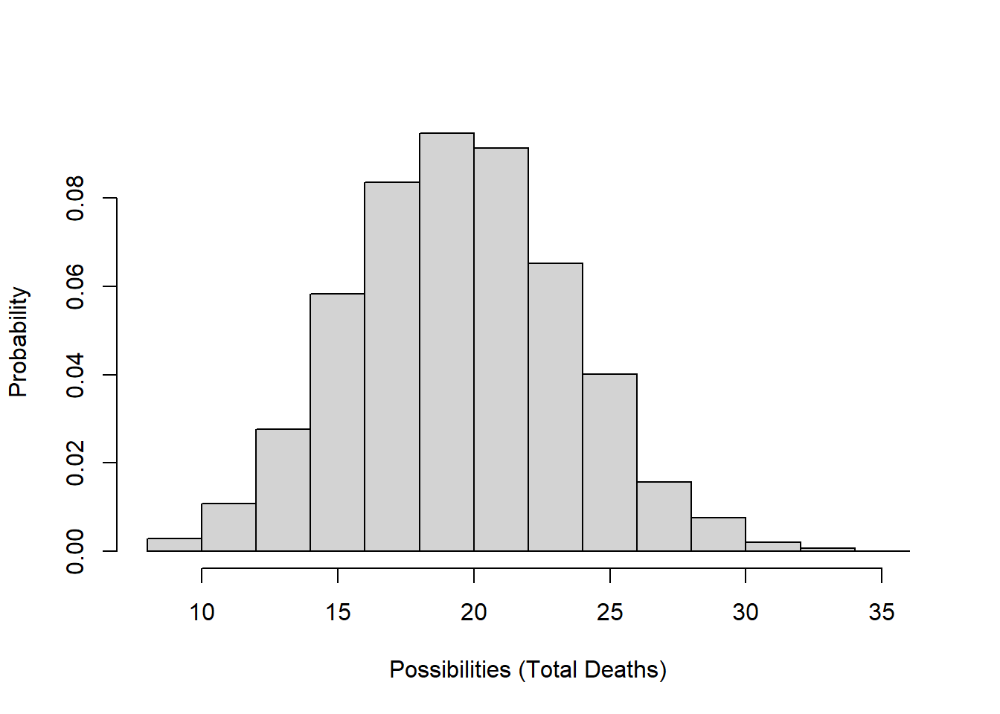
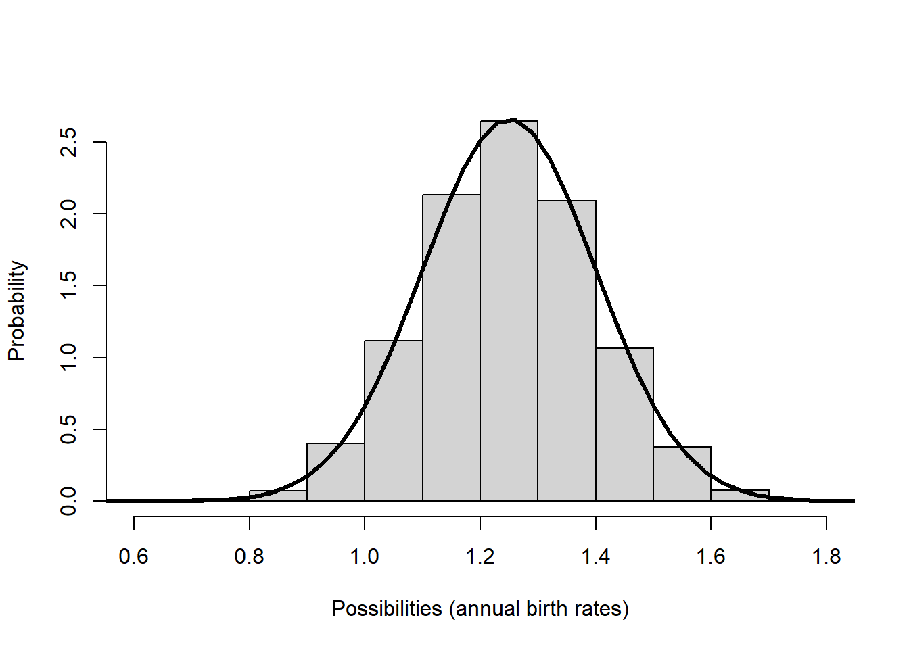

Lab 5: Stochasiticity and Uncertainty
NRES 470/670
Spring 2023
As ecologists, we work with ‘messy’ systems- we must therefore embrace uncertainty!!
In this lab we will continue to add complexity (and realism) to our population models in InsightMaker. Among the concepts we will explore are parameter uncertainty, demographic stochasticity and environmental stochasticity.
Here are the concepts we need for this lab (review!):
Insufficient knowledge (exact parameter value is unknown)
What if we don’t have enough data to specify our model? That is, what if we lack sufficient knowledge about key parameters in our model, like birth rate, or carrying capacity?
We can characterize this type of uncertainty (lack of knowledge) by using upper and lower bounds (e.g., confidence intervals) that represent a range of plausible values to stand in for the uncertain parameter value.
Some ways this uncertainty could be represented include:
\(b = [1.1,1.9]\) –or–
\(b = 1.5 \pm 0.4\)
To “embrace” this type of uncertainty, we use uncertainty analysis. In its simplest form, we run the model for the lower and upper possible values (lower and upper bounds) and see what happens to our study system in each case.
For example, the population might decline by 50% under the worst case scenario and double under the best case scenario. The truth is uncertain of course, but it is likely to fall somewhere between these two extremes!
NOTE: if you collect more data about your study system (gain more knowledge), you can reduce the uncertainty about key parameter values, and thereby improve the accuracy of your predictions!
Inherent unpredictability of population outcomes
Even if we collect all the data we possibly can about our study system, there will still be substantial uncertainty about the future! This uncertainty is derived from two sources: (1) individual-level randomness: the inherent randomness in knowing whether each individual will live or give birth to female offspring each year, and (2) population-level randomness: the inherent randomness of environmental conditions each year (will environmental conditions be favorable or unfavorable to population growth?).
Individual-level randomness (demographic stochasticity)
We can’t predict whether an individual will live or die, breed or not breed, have females or males, have twins or triplets. In other words, we can’t predict whether an individual will be “lucky” or “unlucky” each year!
We might know (with absolute certainty!) the per-capita probability of breeding, or the probability of dying, or the per-capita rate of offspring production, or the probability of a given offspring being female. But when it comes to projecting exactly who lives and dies, who gives birth and who doesn’t, how many females are born, we just can’t know for sure.
In population ecology this type of uncertainty is called demographic stochasticity.
We “embrace” this form of uncertainty by making the total number of births and deaths (the flows into and out of our stock[s]) stochastic.
That is, we use a random-number generator in place of a fixed number to represent the total births [Flow In] and total deaths [Flow Out].
Demographic stochasticity in births
For the total annual number of births in a population (the Births flow in InsightMaker), we usually use a Poisson distribution. The Poisson random number generator only produces whole numbers (we don’t like fractional individuals anyway) and doesn’t produce negative numbers. This makes it a good way to model births!
\(Births \sim Poisson(b*N_t) \qquad \text{(Eq. 1)}\)
For example, let’s imagine population size is 100 and the per-capita birth rate is exactly 0.8. Here is the distribution of Births (total annual number of births in the population):
# Review random number generators in R ----------------------
# Poisson distribution (often used for modeling total annual births in a population)
hist(rpois(10000,(100*0.8)),main="",freq = F,ylab="Probability",xlab="Possibilities (Total Births)")
Demographic stochasticity in deaths
The total number of deaths in a population each year (the Deaths flow(s) in InsightMaker) is usually modeled using a Binomial distribution. The Binomial random number generator only produces whole numbers (which we like- again, no fractional individuals!) and can only produce numbers that are greater than or equal to 0 and less than or equal to the total population size. These properties make it good for estimating total number of annual mortality or survival events!
\(Deaths \sim Binomial(size=N_t,prob=d) \qquad \text{(Eq. 2)}\)
Let’s imagine population size is 100 and per-capita death rate is exactly 0.2. Here is the distribution of possible values for the total deaths in this population:
# Binomial distribution (often used to represent total survivors or deaths in a population model )
hist(rbinom(10000,100,0.2),main="",xlab="Possibilities (Total Deaths)",freq = F,ylab="Probability")
Population-level randomness (environmental stochasticity)
Finally, we usually can’t predict whether next year or the year after will be a good one or a bad one- that is, whether the intrinsic rate of growth r or the population vital rates like b and d will be favorable or unfavorable (or average!) from one year to the next (whether a population will “get lucky”, so to speak).
In population ecology this is called environmental stochasticity.
The term catastrophe is reserved for stochastic environmental events that cause major population crashes or extinction. The term bonanza is sometimes used to describe rare, very favorable environmental events that cause rapid population growth!
To “embrace” environmental stochasticity, we make the per-capita vital rates (e.g., the “r” or “b” or “d” terms– or the per-capita transition rates in a transition matrix) stochastic.
That is, we use a random-number generator in place of a fixed number to represent the per-capita vital rates, often represented as [Variables] in our InsightMaker models.
For this type of variability, we often use a Normal distribution or a uniform distribution. These random number generators are not (and should not be) constrained to be whole integers.
For example, let’s imagine that annual per-capita birth rates (\(b\)) are generally around 1.25 but can vary between 0.8 and 1.7 depending on how favorable the weather is each year. Here is a distribution of birth rates from a Normal random number generator that approximately matches this description:
# Normal distribution (often used to model environmental stochasticity)
hist(rnorm(10000,mean=1.25,sd=0.15),main="",freq=F,xlab="Possibilities (annual birth rates)",ylab="Probability")
curve(dnorm(x,1.25,0.15),0,3,lwd=3,add=T)
Or what if our mean per-capita birth rate is 1.1, with a standard deviation of 0.4:
# hist(rnorm(10000,mean=1.1,sd=0.4),main="",xlab="Possibilities (annual birth rates)",freq = F,ylab="Probability")
curve(dnorm(x,1.1,0.4),0,3,xlab="Possibilities (annual birth rates)",ylab="Probability",lwd=3)
Okay now let’s get to the actual lab activity!
Exercise 1: Lack of knowledge
Start with a basic exponentially growing population that looks something like this:

Set Birth rate equal to 0.2 and Death rate equal to 0.18. Set initial abundance to 10. Under the “Settings” menu set the model to run for 30 years. Make sure your Population stock can NOT go negative (this is a setting in the configurations panel). Hit “Simulate”- you should see positive exponential growth!
What if we have imperfect knowledge about birth rate? The data we have are consistent with a birth rate \(b\) as low as 0.15 and as high as 0.25. Run the model with the lowest and the highest possible birth rates. Now use the “Compare Results” tool (under the “Tools” menu in the upper right corner…) to visualize the range of possible population growth trajectories that would be possible given our uncertainty about the per-capita birth rate (i.e., plot the “worst-case scenario” and the “best-case scenario” in the same plot).
1a. Upload the plot you just generated above (illustrating both worst case and best-case scenarios).
1b. Given the uncertainty we have about the birth rate parameter \(b\), what is the lower and upper bound (worst case and best-case scenarios) for the final abundance at year 30? Would it be reasonable to conclude that the population growth rate is positive in this population? Please justify your response.
Now, what if we tried to use a random number generator to represent uncertainty about the birth rate parameter instead of using the “best-case, worst-case” approach (like we did in 1a, 1b).
Let’s try it! Here we will use a uniform probability distribution to represent our uncertainty about the birth rate parameter.
In InsightMaker, change the “Birth rate” parameter \(b\) (previously set at 0.2) to instead draw from a uniform distribution with minimum of 0.15 and maximum of 0.25 (so that the random number generator always produces values within this range).
We can do this in InsightMaker in one of two distinct ways: one way (Method #1) is to define birth rate \(b\) like this:
Rand(0.15, 0.25)and the other (Method #2) is to define the birth rate \(b\) like this:
Fix(Rand(0.15, 0.25))Try implementing both methods (methods #1 and #2, above). For each of these two methods, use the “Sensitivity Testing” tool (in the “Tools” menu in InsightMaker, upper right-hand corner) to run the model 50 times (each time for 30 years). Choose [Population] as the “Monitored Primitive” (otherwise use the default settings), and set the “Number of Runs” to 50. Run the Sensitivity Testing tool using the “Run Analysis” button and save a screenshot of resulting plot. Ultimately you will have two sensitivity testing plots: one plot for Method #1, and another for Method #2.
The following questions relate to these two plots:
1c. Upload your “sensitivity testing” plot for Method #1 (see above instructions)
1d. Upload your “sensitivity testing” plot for Method #2 (see above instructions)
1e. Examine the range of final abundances in the two plots (i.e., the difference between the maximum possible abundance and the minimum possible abundance after 30 years). Which method (Method #1 or #2) yielded the greatest uncertainty about the final abundance (i.e., the largest range of possible values)?
1f. Methods #1 and #2 differ in only one way: the use of the “Fix” function in InsightMaker (the “Fix” function is used in Method #2 but not Method #1). What does the “Fix” function do in InsightMaker? (NOTE: it’s not cheating if you look up what InsightMaker’s “Fix” function does on the internet!).
Let’s think through the problem one more time- we are uncertain about the true value of the per-capita birth rate, \(b\), for a rare species. The actual birth rate for this population could be anything from 0.15 to 0.25 - we really can’t say! Given this uncertainty, we want to know what the abundance will be after 30 years.
1g. If you were a wildlife manager tasked with predicting the abundance of this population 30 years into the future, which of the two methods (method #1 or #2) would be most appropriate for answering this question? That is, which of the two plots you produced (question 1c for method #1 or 1d for method #2) is a better representation of our uncertainty about the final population size at year 30? Explain your reasoning. [Hint: try to compare each of the plots from 1c and 1d with the results from question 1b]
Exercise 2: Demographic and Environmental Stochasticity (inherent unpredictability)
First, make sure to set Birth rate in your model back to 0.2. Change the initial abundance back to 10 individuals. Hit “Simulate”- make sure you still see exponential growth!
Demographic Stochasticity
We will use a Binomial distribution to represent the total number of deaths in the population each year. In essence, we are ‘flipping a coin’ for each individual in the population to see if it lives or dies. In this case the coin comes up “death” 20% of the time!
A random draw from the Binomial distribution essentially represents the number of times “death” came up after we completed all the coin flips.
To do this in InsightMaker, use the following formula for the Deaths flow (assuming your population is called “Population” and \(d\) is called “Death rate”):
RandBinomial([Population], [Death rate])NOTE: you can use the “random number generators” menu in the equation editor to have InsightMaker give you the proper syntax. Try to avoid relying on typing commands directly in InsightMaker.
For the total number of births, we will use the Poisson random number generator. The Poisson distribution is often used to represent the total number of births each year ([Births] flow). To do this in InsightMaker, use the following formula to represent the total number of births in the population (assuming your population is called “Population” and \(b\) is called “Birth rate”):
RandPoisson([Population]*[Birth rate])That is, the total number of births is a random draw from a Poisson distribution with expected value equal to \(N\times b\).
Exercise 2a to 2d (demographic stochasticity)
2a. Provide the link (URL) for your InsightMaker model with demographic stochasticity (still with 30 year time frame), using a random Binomial generator for the deaths flow and a random Poisson generator for the births flow. Remember to clone your submitted model before making any changes!
Next, use the “Sensitivity Testing” tool (in the “Tools” menu, upper right corner) to run the model 50 times for 30 years with a starting abundance of 10 individuals. Choose [Population] as the “Monitored Primitive”. Download the resulting plot as an image (or save a screenshot of the plot).
2b Upload the plot of your demographic stochasticity model (2a), created using the “sensitivity testing” tool, with the model initialized with 10 individuals.
Next, change the initial abundance from 10 to 500 and re-run the “Sensitivity Testing” tool (run the model 50 times for 30 years). Download the resulting plot as an image (or save a screenshot of the plot).
2c Upload the plot of your demographic stochasticity model (2a), created using the “sensitivity testing” tool, with the model initialized with 500 individuals.
2d. Use the two plots (2b and 2c) to evaluate the following question: does demographic stochasticity have a greater influence on population dynamics and extinction risk for large populations (high abundance) or small populations (low abundance)? Explain your reasoning, referencing the plots you produced in 2b and 2c.
Environmental Stochasticity
Set the Births flow back to the way it was specified originally (\(N \times b\)), and reset the Deaths flow to it’s original setting (\(N \times d\)). Set your initial abundance back to 10.
We will use a Normal distribution to represent how the birth rate changes each year (environmental stochasticity). This could represent climatic variablity – “good years” and “bad years”.
The Normal distribution is commonly used for this type of variability- it is characterized by an average value (mean) and a measure of variability or spread (standard deviation).
For this exercise, we will assume that the annual birth rate \(b\) in this population has a mean of 0.2 but varies year to year with a standard deviation of 0.15.
To do this in InsightMaker, you can use the following formula for the Birth Rate variable:
RandNormal(0.2, 0.15)For the death rate \(d\), we will assume that the annual birth rate in this population has a mean of 0.18 but varies year to year with a standard deviation of 0.1.
You can use the following formula for the Death Rate variable:
RandNormal(0.18, 0.1)NOTE: InsightMaker automatically insures that the births flow is not negative (the births flow cannot draw individuals out of the stock) and that the mortality process can’t add new individuals to the population.
As always, make sure your [Population] stock is set so that it cannot go negative!
Questions 2e to 2h (environmental stochasticity)
2e. Copy and paste the link to your InsightMaker model into WebCampus (and clone the model if you think you might make changes later!).
Next, use the “Sensitivity Testing” tool (in the “Tools” menu, upper right corner) to run the model 50 times for 30 years with a starting abundance of 10 individuals. Choose [Population] as the “Monitored Primitive”. Download or save a screenshot of the resulting plot.
2f. Upload the plot you just generated using the ‘sensitivity testing’ tool, with initial abundance set at 10 individuals.
Next, change the initial abundance to 500 individuals and re-run the “Sensitivity Testing” tool (run the model 50 times for 30 years). Download or save a screenshot of the resulting plot.
2g. Upload the plot you just generated using the ‘sensitivity testing’ tool, with initial abundance set at 500 individuals.
2h. Use the two plots (2f and 2g) to evaluate the following question: does environmental stochasticity have a greater influence on population dynamics and extinction risk for large populations (high abundance) or small populations (low abundance)? Explain your reasoning, referencing the plots you produced in 2f and 2g.
Exercise 3: Minimum Viable Population
The aruba island rattlesnake, or Cascabel (Crotalus durissus unicolor), is the top predator on the island of Aruba, and primarily consumes rodents.

The Aruba island rattlenake, as you might expect, occurs only on the island of Aruba.

The Aruba rattlesnake is highly endangered, and has several attributes that make it particularly susceptible to falling into the extinction vortex:
- Range is limited to the small island of Aruba
- Total abundance is estimated as 250 individuals
- Population abundance has been declining due to:
- loss and degradation of habitat (overgrazing, human encroachment,
forest clearing)
- human persecution
- loss and degradation of habitat (overgrazing, human encroachment,
forest clearing)
Consider the following scenario: you are tasked with determining the minimum viable population size (MVP) for the Aruba Island rattlesnake. We define the minimum viable population (MVP) as:
MVP: The abundance threshold below which the risk of extinction exceeds 5% over the next 50 years.
Here are the model parameters! (note that much of this is simplified and/or made up entirely!)
- The starting abundance is 250 individuals.
- No age/stage structure!
- Mean per-capita birth rate \(b\) is 0.70 (per-capita birth rate)
- Mean per-capita death rate \(d\) is 0.69 (per-capita death rate)
- Density dependence:
- Carrying capacity is 500 individuals.
- Above carrying capacity, per-capita birth rate drops to 0.35
- Environmental stochasticity:
- birth rate is normally distributed with standard deviation of 0.15
- death rate does not change year to year (it stays constant at 0.69 per year).
- Demographic stochasticity:
- total births are Poisson-distributed
- total deaths are Binomially distributed
Set up an InsightMaker model to represent the above scenario. Use the Sensitivity Testing tool to run 100 replicates (“Monitored primitive” is abundance) for 50 years each. Visualize only the 90% confidence region (region encompassing 90% of simulation runs, with 5% of simulations falling below the lower bound and 5% of simulations falling above the upper bound). Download or save a screenshot of the resulting image.
3a. Upload the “sensitivity analysis” plot (running your rattlesnake model 100 times for 50 years) illustrating the 90% confidence region.
For a viable population under our stated definition, the lower bound of the 90% confidence region (the region below which only 5% of simulation results fall) should be greater than zero at year 50 of the simulation.
3b. Is the current population viable, under the criteria listed above? That is, is there a less than 5% risk of extinction over a 50-year time frame? Hint: refer to the sensitivity testing figure you generated in 3a.
Next, use trial and error to find the minimum viable population (MVP) for the Aruba Island Rattlesnake (try different values for initial abundance and find the smallest initial abundance that results in a viable population).
3c. What is the minimum viable population (MVP) for the Aruba Island Rattlesnake population? Explain your reasoning.
3d. Upload a “sensitivity testing” plot of the Aruba Island Rattlesnake (100 replicates for 50 years each, showing only the 90% confidence region), with initial abundance set at the minimum viable population (MVP) you identified in 3c.
NOTE: you can refer to the “small population paradigm” lecture for more detail on the concept of Minimum Viable Population, or MVP).
By the way, you have now run your first PVA model!!
3e. (thought question) The Aruba island rattlesnake is limited to the small island of Aruba. This fact alone is one of the main reasons this species is thought tpo be critically endangered*. Why is small range size so strongly associated with high extinction risk?
Checklist for Lab 5 completion
- Please submit your responses on WebCampus!
Due Mar. 31 at midnight (11:59pm)
- Short answers, InsightMaker model URLs, and plots (where
appropriate)
- Exercise 1
- Image upload (1a.)
- Short answer (1b.)
- Image upload (1c.)
- Image upload (1d.)
- Short answer (1e.)
- Short answer (1f.)
- Short answer (1g.)
- Image upload (1a.)
- Exercise 2
- InsightMaker URL (2a.)
- Image upload (2b.)
- Image upload (2c.)
- Short answer (2d.)
- InsightMaker URL (2e.)
- Image upload (2f.)
- Image upload (2g.)
- Short answer (2h.)
- Exercise 3
- Image upload (3a.)
- Short answer (3b.)
- Short answer (3c.)
- Image upload (3d.)
- Short answer (3e.)
- Exercise 1